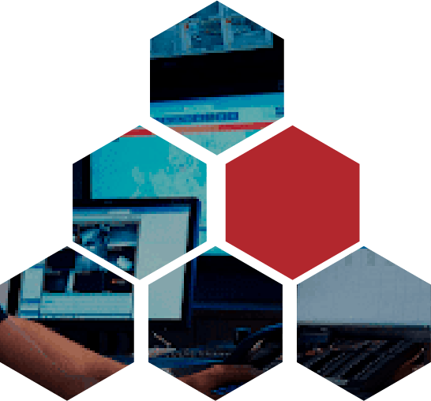

- Diseño, ingeniería e implementación de redes LAN y WAN
- Administración de infraestructura de red
- Monitoreo de infraestructura de red multiplataforma
- Routing & Switching
- Seguridad perimetral
- Data Center
- Servidores de Cómputo Unificado
- Virtualización
- Colaboración
- Telepresencia
- Wireless
- Dispositivos por gestión en la nube
- Cableado estructurado UTP y Fibra óptica
- Telefonía IP
- Comunicaciones unificadas
- Mantenimiento menor y mayor a todo tipo de redes (preventivo y correctivo a infraestructura física y lógica)
NOS ESPECIALIZAMOS EN EL
DISEÑO, INGENIERÍÁ E
IMPLEMENTACIÓN DE
TECNOLOGÍAS EN
CENTROS DE MONITOREO Y SOLUCIONES DE
INTELIGENCIA ARTIFICIAL CONTRA LA COVID-19
INTELIGENCIA ARTIFICIAL CONTRA LA COVID-19
MONITOREO Y CONTROL Además de modelos de protección y diversos procedimientos de vanguardia, utilizamos la mejor tecnología a nivel mundial para integrar soluciones tecnológicas de impacto en seguridad electrónica, TI e infraestructura de soporte.
REDES Y TELECOMUNICACIONES
PROTECCIÓN PERIMETRAL
- Diseño, ingeniería e implementación de sistemas de protección perimetral
- Sensores montados en cerca, malla, concertina...
- Sensores de microondas
- Sistemas de monitoreo y alarmas
- Barreras sensores
- Sensores portátiles y relocalizables
- Integración con sistema de control de acceso, luminarias, voceo...
- Mantenimiento preventivo y correctivo
CCTV
- Diseño, ingeniería e implementación de sistemas de circuito cerrado de televisión (CCTV)
- Analógico e híbrido
- IP y Megapixel
- Soluciones para ambientes extremos
- Diseño e implementación de cuartos de monitoreo y control
- Reconocimiento facial
- Identificación de placas (LPR)
- Escáner vehicular (Auvis)
- Cámaras térmicas
- Exclusión de áreas (caminos perimetrales)
- Video analíticos (cruce de línea, objeto removido, objeto olvidado, cambio de sentido...)
- Video forense
- Mantenimiento preventivo y correctivo

CONTROLES DE ACCESO VEHICULAR Y PEATONAL
- Diseño, ingeniería e implementación de sistemas de control de acceso vehicular y peatonal
- Puertas giratorias, corredizas y torniquetes
- Esclusas unipersonales
- Barreras ópticas y vehiculares
- Pedestales y monturas
- Electroimanes, sensores y contactos
- Chapas magnéticas y botones de pulso y liberación
- Fuentes de poder y de respaldo
- Llaves y cerraduras electrónicas
- Racks y gabinetes
- Pilonas, bolardos y ponchallantas
- Mantenimiento preventivo y correctivo
TECNOLOGÍAS DE IDENTIFICACIÓN
IXMAKI es un Sistema de Gestión de Identidad que permite el registro de información general y de las diferentes biometrías humanas para la administración de identidades y el intercambio de datos biométricos.
- Pase de lista
- Control de tiempo y asistencia
- Control de presencia
- Verificador de documentos
- Control de visitantes
- Generación de archivos NIST
RFID
- Tarjetas, tags, etiquetas... (de diferentes frecuencias)
- Manos libres, 2.45 Ghz, 900 Mhz (UHF)
- Antenas de diferentes frecuencias
DATA CENTER
- Consultoría, auditoría, ingeniería y diseño de Centros de Datos
- Infraestructura de distribución de energía eléctrica
- Sistemas de protección antidescargas y piso antiestático
- Infraestructura de climatización
- Sistemas de telecomunicación en entornos CPD
- Sistemas de detección y extinción de incendios
- Sistemas de seguridad perimetral
- Sistemas de videovigilancia
- Control de accesos
- Integración de herramientas de gestión (DCIM)
- Tareas de explotación y mantenimiento integral
- Cerramientos de RACK
SISTEMA DE GEOLOCALIZACIÓN (CENTROS DE MONITOREO)
- Adquisición y procesamiento de datos de la unidad
- Control total y regulación de todo tipo de unidades vehiculares: Velocidad, apertura, potencia activa, limitador de apertura, potencia reactiva, factor de potencia y tensión, arranque y paro
- Supervisión, operación y monitoreo de los equipos de la planta mediante el registro de alarmas, eventos, gráficos y reportes

INHIBICIÓN CELULAR
- Llamadas de celular (frecuencias comerciales)
- Mensajes de texto
- Señales de posicionamiento GPS
- Servicios de datos
- Redes de Wi-Fi y Bluetooth
SISTEMA DE AUTOMATIZACIÓN BMS
- Diseño, ingeniería e implementación de sistemas de administración, gestión, supervisión y control para edificios (automatización integral de sistemas de soporte a la operación basado en software y hardware)
- Cuadros eléctricos, iluminación, grupos electrógenos...
- Ascensores, montacargas, rampas o escaleras mecánicas
- Sistemas de climatización o aire acondicionado (HVAC)
- Sistemas hidráulicos, captación de lluvia y riego
- Contra incendio
- Control de acceso, CCTV y seguridad perimetral